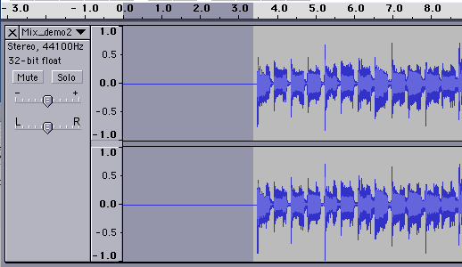
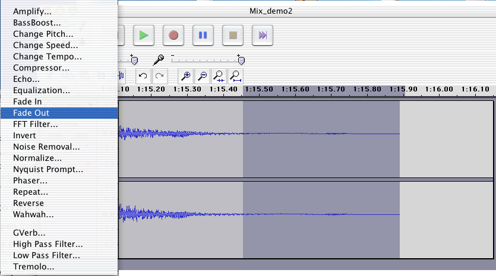
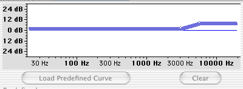
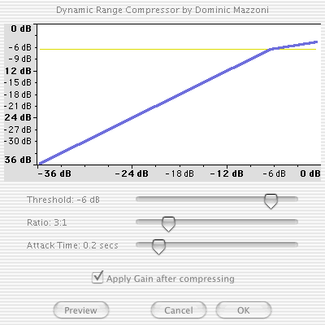

For this tutorial you can use the file created in the Bounce-to Disk tutorial or download this file as a starting point: Mix_demo2.aif (13.7 MB)
1. Open Audacity and choose Open from the File Menu. Open the file Mix_demo2.aif.
2. You'll notice that there's some empty space at the beginning and end of the file. Remember that since Reason doesn't have have a count off, you probably left the first couple of measures in your sequence empty. Zoom in on the beginning of the file. Select the blank space; choose Delete from the Edit Menu, or simply hit the Delete key.

Remove any blank space at the beginning of a mix file.
3. Repeat this at the end of the file. Listen carefully to make sure you're not removing any of the reverb tail.
4. We can smooth the very end by selecting the last second of audio and choosing Fade Out from the Effect Menu. This the very minimum you'll need to do to make an acceptable master. If you're inclined to do some more processing, continue on.

Trim the end of a mix file and add a fade if needed.
Let's try some equalization and compression on our mix file. As you're experimenting with these functions, remember that the basic sound of the mixed file is already set, and at this point, we're just fine tuning. Be subtle!
5. Select the entire file by choosing Select All from the Edit Menu (Edit>Select>All). Choose Equalization for the Effect Menu. A frequency domain graph appears and you'll be able to use breakpoints to define frequency ranges to boost or cut. Click to the blue line to define where you want a range to begin. Click again to choose an end point. Make additional selections and raise or lower the line to boost or cut. You can listen to how your settings affect the sound by selecting Preview. When you've settled on settings that sound good to you, click OK and the file will be re-written to incorporate the changes. The window below shows a slight boost in the higher frequencies.

The Equalization Window in Audacity
6. You'll notice that although the overall level of the mix is pretty consistent, there is still a fair amount of dynamic range here. Let's add a touch of compression to make the file sound a bit louder and fuller. Once again, select all, and this time choose Compressor from the Effect Menu. We're going to be subtle here and set a relatively high threshold. Try the following settings:

The Compressor Window in Audacity
You can hear the effect of this by selecting Preview. See what you think, and when you're satisfied with the sound, click OK to write the changes to disk.
7. Listen to the entire song and make sure everything sounds good to you. Remember, this is the master, so take the time to make sure it's done well.
8. When we save a file in Audacity, it saves as it's own format, so when you're done, select Export as AIFF from the File Menu. Although there's an option here to save as an MP3, it doesn't function in the version we've downloaded, so we'll use iTunes.